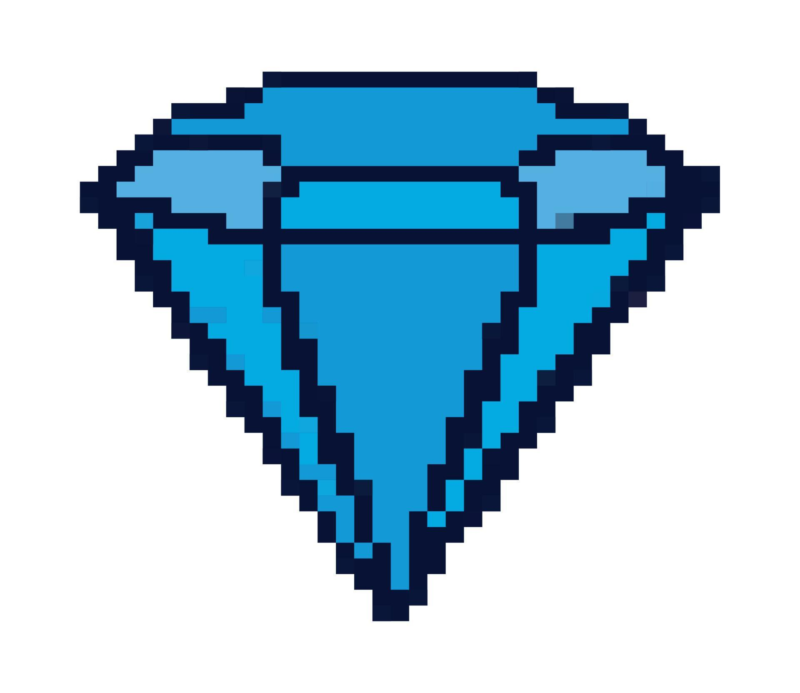

Hello, It's Me Jimly Nur Arif And I'm a Website Developer This is my website portofolio, feel free to discovering
Project Diamond Hunter Bot Find Diamond As Much As Possible, The Best Or Nothing Stack: HTML CSS JS Python 